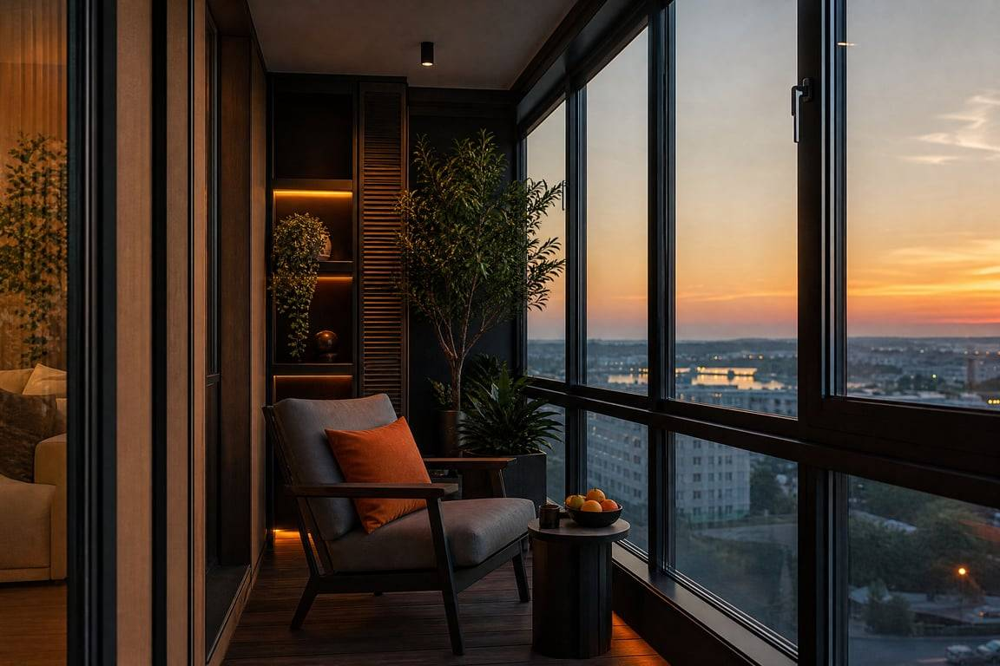
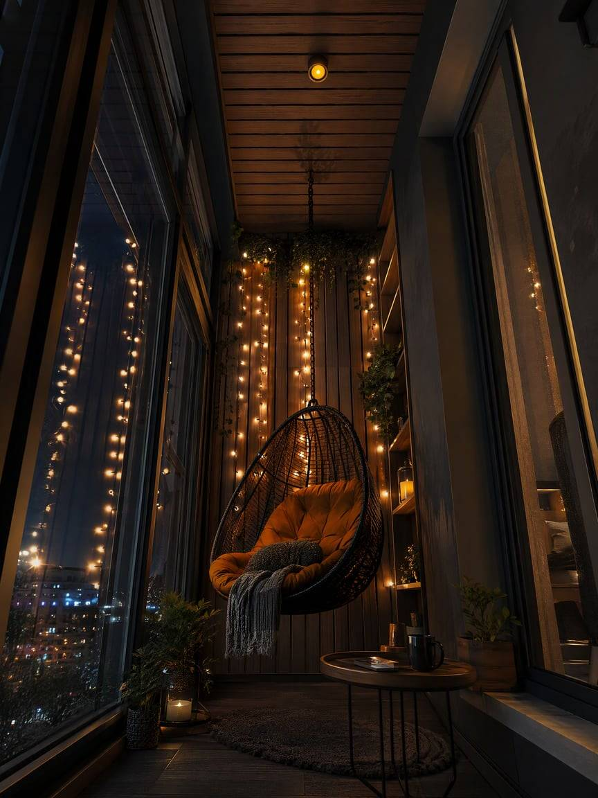
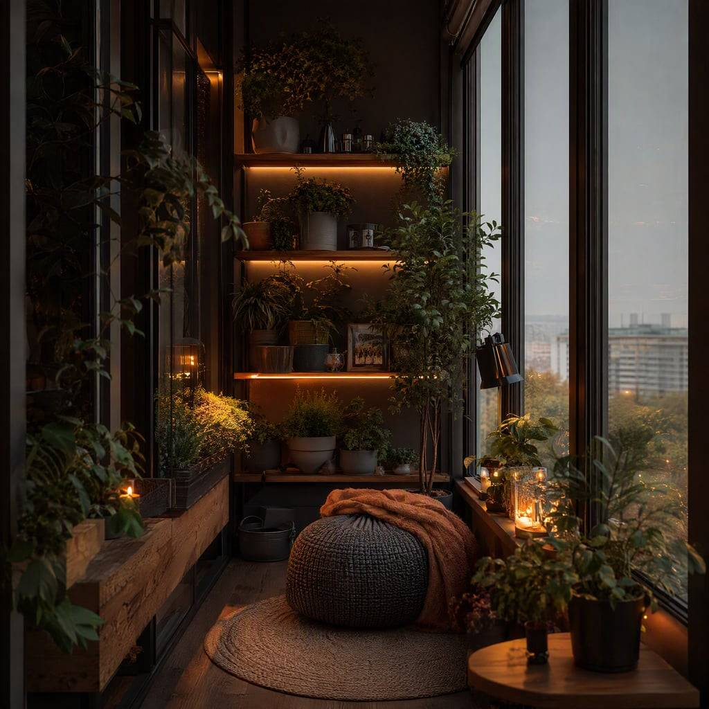
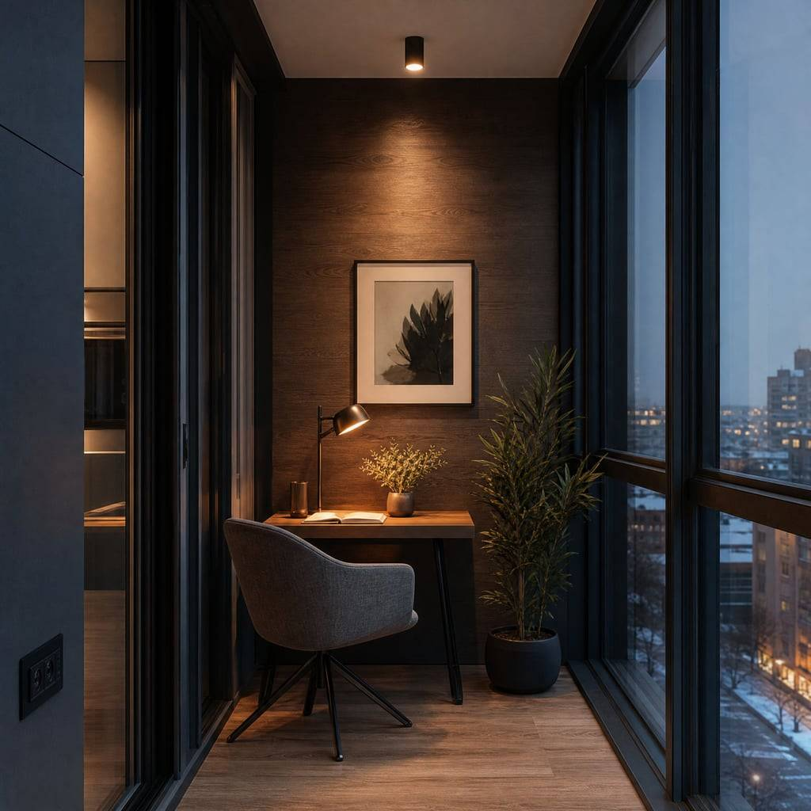
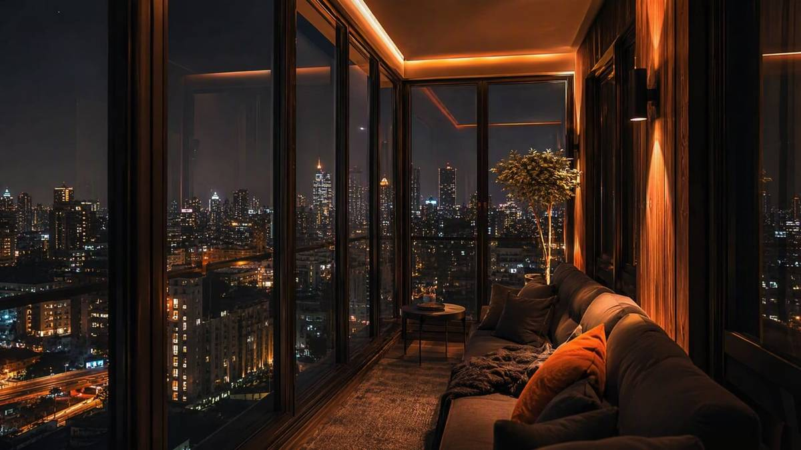
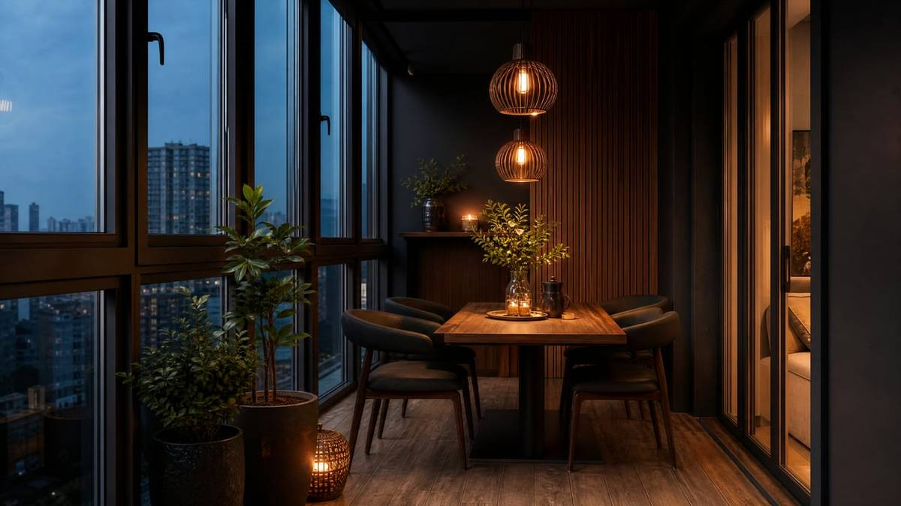

Остекление в пол
В нашем офисе, при вас
При вас создадим визуал вашего балкона. Приезжайте к нам в офис — Санкт-Петербург, Октябрьская наб., 6, офис 307 — и мы при вас создадим вашу мечту.
Фото, скетч или референс — сгодится всё.
На большом экране подбираем остекление, отделку и свет.
Готовый визуал и честная смета — в тот же день.





